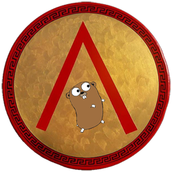

Sparta 
Build & deploy Go functions in AWS Lambda"No Server Is Easier To Manage Than No Server."
Sparta defines a framework that deploys a set of Go HTTP request/response handlers to AWS Lambda.
What differentiates Sparta from similar approaches is that it enables you to create and manage the other AWS resources associated with your application. It also exposes the ability to generate, as part of your deployment, individual IAM Policies under which your Go functions will execute. The ability to limit lambda execution privileges helps support POLP and #SecOps.
Sparta allows your application to create or reference, in Go, additional AWS resource relations including:
- AWS Lambda Event Sources
- DynamoDB
- S3
- Kinesis
- SNS
- SES
- Other AWS resources
- S3 buckets with dynamic names
- SNS resources
- Any other CloudFormation Resource Type
- API Gateway resources
- S3 Static Websites
- Sparta can provision an S3 bucket with your static resources, including CORS support

Sparta leverages CloudFormation to deploy and update your application. For resources that CloudFormation does not yet support, it uses Lambda-backed Custom Resources so that all application updates support both update and rollback semantics. CloudFormation resources use stable identifiers whenever possible to preserve service availability during updates.
Getting Started
To get started using Sparta, begin with the Documentation.
Problems?
Please file an issue in GitHub. Thanks.